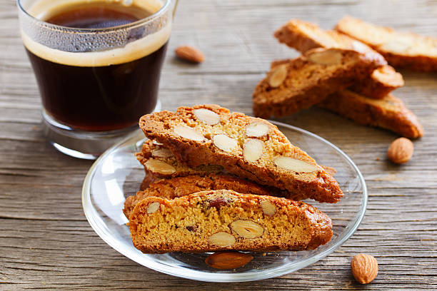

Mama Mia Biscotti Biscuits

Easy Peasy and yet so delicious Italian treats. Perfecto with a coffee!
Ingredients:
- 340g butter (1.5 cups)
- 1 3/4 cup castor sugar
- 6 eggs
- 1 tsp anise extract
- 2 tsp vanilla extract
- 6 cups all purpose flour
- 1/2 tsp salt
- 2 tsp baking powder
- 225g chopped almonds (1 cup)
- preheat the oven to 165 degC.
- cream the butter and sugar together.
- add the eggs in one at a time and beat until fluffy.
- Add anise and vanilla extract.
- sift all dry ingredients including the chopped almonds and add to the wet mix.
- mix with a spoon and then kneed with the hands.
- divide dough into 4.
- roll each into a log shape of about 15inches long and place onto baking trays.
- flatten logs out slightly.
- bake for 25-30 min until loaves are firm and then remove from the oven to cool.
- once cooled cut loaves into 1/2 inch wide slices.
- place slices onto baking tray and toast each side for about 10min.
- remove and place on cooling racks.
TIP - for extra crunch, once you have cut into pieces, turn the oven temp down to 100 degC and then bake for 1 hour.